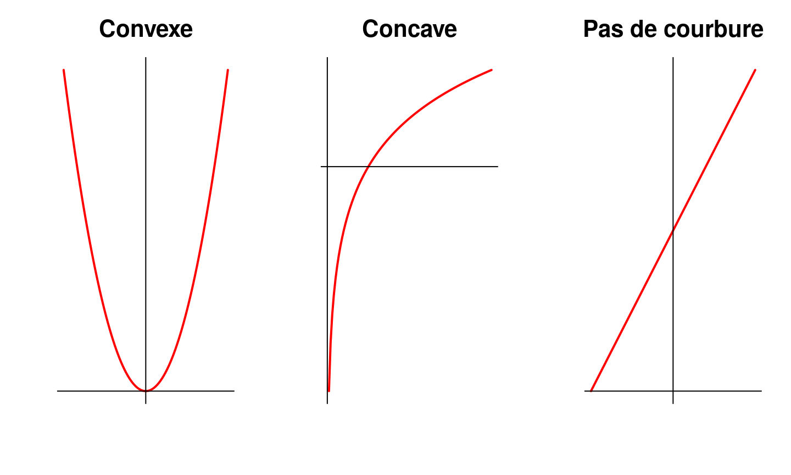
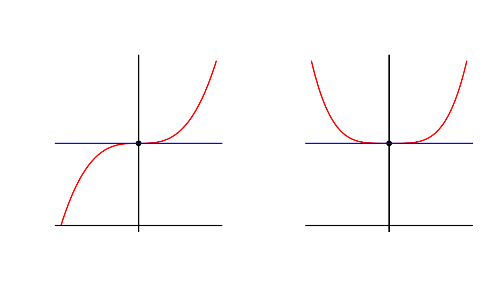

18 octobre 2018
La dérivée en \(x_0\) d’une fonction \(f\) dépendant de \(x\) est notée \(f'(x_0)\) et définie comme suit \[f'(x_0) = \lim_{h \to 0} \frac{f(x_0 + h) - f(x_0)}{h}\]
Pour éviter de recalculer \(f'\) from scratch à chaque fois, on vous a invité à apprendre par coeur
\[ \begin{align*} \forall \alpha \in \mathbb{R}, \quad (x^{\alpha})' = \alpha x^{\alpha - 1} & &\\ \sin'(x) = \cos(x) & & cos'(x) = -\sin(x) \\ (e^x)' = e^x & & \ln'(x) = \frac{1}{x} \\ (u \times v)' = u'v + uv' & & \left( \frac{u}{v} \right)' = \frac{u'v - uv'}{v^2} \\ (g \circ f)(x) = f'(x) g'(f(x)) & & (f^{-1})'(x) = \frac{1}{f' \circ f^{-1} (x)} \end{align*} \]
De façon générale, si deux quantités \(a\) et \(b\) sont liées entre elles par une relation quelconque (algébrique, géométrique, physique, etc), une infime variation de l’une (de \(a\) vers \(a + \text{d}a\)) va entraîner une infime variation de l’autre (de \(b\) vers \(b+\text{d}b\)). \[ \text{Si:} \quad a \to a + \text{d}a \quad \text{alors} \quad b\to b + \text{d}b \]
Si les différentielles sont suffisamment petites, alors elles sont proportionnelles entre elles et le coefficient de multiplication est la dérivée: \[\text{db} = \frac{\text{d}b}{\text{d}a} \text{d}a\]
Dans la notation traditionnelle avec \(f'(x)\), on retrouve bien un rapport entre deux variations infinitésimales:
On voit souvent les deux notations
Les deux sont à connaître.
On considère un angle qui mesure \(\alpha\) radians. Une variation infime de cet angle, notée \(\text{d}\alpha\), entrainera une minuscule variation de \(\sin(\alpha)\), notée \(\text{d}\sin(\alpha)\). Puisque la dérivée de \(\sin\) est \(\cos\), on la relation de proportionalité suivante entre les variations infinitésimales \[
\text{d}\sin(\alpha) = \cos(\alpha) \text{d}\alpha
\] En pratique, la relation précédente est vraie dès que \(\text{d}\alpha\) est
On peut donc adopter une définition, moins rigoureuse mais plus pratique, des différentielles: ce sont des variations
On peut relier les dérivées successives au comportement du graphe de \(b(a)\) au voisinage de \(a\)

Attention à la
On considère \(b = a^6\) et \(u = a^2\), de sorte que \(b = u^3\). On a \[ \frac{\text{d}b}{\text{d}a}(a) = 6a^5 \quad \text{mais} \quad \frac{\text{d}b}{\text{d}u}(u) = 3u^2 (\neq 6a^5) \]
Il est très facile de manipuler les différentielles pour retrouver des dérivées compliquées. Il arrive souvent que la variation d’une quantité \(A\) implique la variation d’une quantité \(B\) qui implique la variation d’une quantité \(C\). On a alors des relations de proportionalité entre les différentielles: \[ \text{d}B = \frac{\text{d}B}{\text{d}A} \text{d}A \quad \text{d}C = \frac{\text{d}C}{\text{d}B} \text{d}B \quad \text{d}C = \frac{\text{d}C}{\text{d}A} \text{d}A \] d’où on déduit aisément \[ \frac{\text{d}C}{\text{d}A} = \frac{\text{d}C}{\text{d}B} \times \frac{\text{d}B}{\text{d}A} \]
En alourdissant un peu les notations pour expliciter les points auquels sont calculés les dérivées, on obtient \[ \frac{\text{d}C}{\text{d}A}(A) = \frac{\text{d}C}{\text{d}B}(B) \times \frac{\text{d}B}{\text{d}A}(A) \]
D’où on tire par analogie (avec \(A=x\), \(B=f(x)\) et \(C=(g\circ f)(x)\) la formule fondamentale du calcul différentiel \[ (g \circ f)'(x) = f'(x) g'(f(x)) \]
On peut évidemment généraliser à la composée de plus de deux fonctions.
En posant événtuellement \(u = \omega t + \phi\), calculer la dérivée par rapport à \(t\) de \(\sin(\omega t + \phi)\)
\[ \begin{align*} \frac{\text{d}(\sin(\omega t + \phi))}{\text{d}t}(t) & = \frac{\text{d}\sin(u)}{\text{d}u}(u) \times \frac{\text{d}u}{\text{d}t}(t) \\ & = \cos(u) \times \omega \\ & = \omega \cos(\omega t + \phi) \end{align*} \] On n’oubliera pas de bien tout exprimer en fonction de la variable de dérivation (ici \(t\)).
En combinant le mini-formulaire (exception faite de \((f^{-1})'(x)\)) et le résultat précédent, on retrouve des dérivées connues uniquement comme cas particuliers \[ \begin{align*} (e^{u(x)})' = u'(x)e^{u(x)} \\ (\ln(u(x)))' = \frac{u'(x)}{u(x)} \\ (u^\alpha(x))' = \alpha u'(x) u^{\alpha-1}(x)\\ \end{align*} \]
Calculer les dérivées suivantes (en décomposant les calculs et en vous servant du formulaire si besoin) \[ \begin{align*} \frac{\text{d}(\tan(\alpha))}{\text{d}\alpha} & & \frac{\text{d}[1/\cos(\alpha)]}{\text{d}\alpha} \\ \frac{\text{d}[1/\sin(\alpha)]}{\text{d}\alpha} & & \frac{\text{d}[1/\tan(\alpha)]}{\text{d}\alpha} \end{align*} \]
\[ \begin{align*} \frac{\text{d}(\tan(\alpha))}{\text{d}\alpha} & = \frac{1}{\cos^2(\alpha)} = 1 + \tan^2(\alpha)\\ \frac{\text{d}[1/\cos(\alpha)]}{\text{d}\alpha} & = \frac{\sin(\alpha)}{\cos^2(\alpha)}\\ \frac{\text{d}[1/\sin(\alpha)]}{\text{d}\alpha} & = -\frac{\cos(\alpha)}{\sin^2(\alpha)}\\ \frac{\text{d}[1/\tan(\alpha)]}{\text{d}\alpha} & = \frac{-1}{\sin^2(\alpha)} \end{align*} \]
\[ \begin{align*} \frac{\text{d}[u\ln(u) - u ]}{\text{d}u} & & \frac{\text{d}[(v - 1)e^v]}{\text{d}v}\\ \frac{\text{d}[1/(1+\epsilon^2)]}{\text{d}\epsilon} & & \frac{\text{d}[1/\tan{\alpha}]}{\text{d}\alpha} \\ \frac{\text{d}^2[\sin^2(\theta)]}{\text{d}\theta^2} & & \frac{\text{d}^2[x\sqrt{x}]}{\text{d}x^2} \\ \frac{\text{d}^2[\ln(y)]}{\text{d}y^2} & & \frac{\text{d}^2[z^3+3z^2+3z+1]}{\text{d}z^2} \end{align*} \]
Calculer les dérivées suivantes (en décomposant les calculs et en vous servant du formulaire si besoin) \[ \small \begin{align*} \frac{\text{d}[u\ln(u) - u ]}{\text{d}u} = \ln(u) & & \frac{\text{d}[(v - 1)e^v]}{\text{d}v} = ve^v \\ \frac{\text{d}[1/(1+\epsilon^2)]}{\text{d}\epsilon} = \frac{-2\varepsilon}{(1+\varepsilon^2)^2}& & \frac{\text{d}[1/\tan{\alpha}]}{\text{d}\alpha} = \frac{-1}{\sin^2(\alpha)} \\ \frac{\text{d}^2[\sin^2(\theta)]}{\text{d}\theta^2} = 2\cos(2\theta) & & \frac{\text{d}^2[x\sqrt{x}]}{\text{d}x^2} = \frac{3}{4\sqrt{x}}\\ \frac{\text{d}^2[\ln(y)]}{\text{d}y^2} = \frac{-1}{y^2} & & \frac{\text{d}^2[z^3+3z^2+3z+1]}{\text{d}z^2} = 6z + 6 \end{align*} \]
Calculer les dérivées suivantes (en décomposant les calculs et en vous servant du formulaire si besoin) \[ \begin{align*} \frac{\text{d}[(1+u^3)^4]}{\text{d}u} & & \frac{\text{d}[\sqrt{1+v^2}]}{\text{d}v} \\ \frac{\text{d}[\ln(1-x)]}{\text{d}x} & & \frac{\text{d}[2\sin(\alpha - \frac{\pi}{8})]}{\text{d}\alpha} \\ \frac{\text{d}[\tan^2(\theta)]}{\text{d}\theta} & & \frac{\text{d}[e^{-y^2}]}{\text{d}y} \\ \frac{\text{d}[1/\sqrt{1+u^2}]}{\text{d}u} & & \frac{\text{d}[\sqrt{z^3 + 3z^2 + 3z + 1}]}{\text{d}z} \end{align*} \]
Calculer les dérivées suivantes (en décomposant les calculs et en vous servant du formulaire si besoin) \[ \scriptsize \begin{align*} \frac{\text{d}[(1+u^3)^4]}{\text{d}u} = 12u^2(1+u^3)^3 & & \frac{\text{d}[\sqrt{1+v^2}]}{\text{d}v} = \frac{v}{\sqrt{1+v^2}} \\ \frac{\text{d}[\ln(1-x)]}{\text{d}x} = \frac{-1}{1 - x} & & \frac{\text{d}[2\sin(\alpha - \frac{\pi}{8})]}{\text{d}\alpha} = 2\cos\left(\alpha - \frac{\pi}{8}\right)\\ \frac{\text{d}[\tan^2(\theta)]}{\text{d}\theta} = 2\tan(\theta) + 2\tan^3(\theta))& & \frac{\text{d}[e^{-y^2}]}{\text{d}y} = -2y e^{-y^2}\\ \frac{\text{d}[1/\sqrt{1+u^2}]}{\text{d}u} = -\frac{u}{(1+u^2)^{3/2}} & & \\ \end{align*} \] \[ \scriptsize \frac{\text{d}[\sqrt{z^3 + 3z^2 + 3z + 1}]}{\text{d}z} = \frac{3z^2 + 6z + 3}{2\sqrt{z^3 + 3z^2 + 3z + 1}} \]
Les fonctions réciproques jouent un rôle fondamentales en sciences expérimentales. Il est souvent possible d’
C’est le cas si \(a(b)\) (ou \(b(a)\)) est une
Dans le formalisme mathématique, on note plutôt \(y = f(x)\) et \(x = f^{-1}(y)\).
Les graphes de fonctions réciproques s’obtiennent aisément en
Au vu des relations de proportionalités entre les différentielles: \[ \text{db} = \frac{\text{d}b}{\text{d}a} \text{d}a \qquad \text{da} = \frac{\text{d}a}{\text{d}b} \text{d}b \] On a évidemment la relation suivante: \[ \frac{\text{d}b}{\text{d}a}(a) = \left( \frac{\text{d}a}{\text{d}b}(b) \right)^{-1} \]
Attention à bien calculer les dérivées au point d’intérêt.
Par exemple, si \(a\) et \(b\) sont des quantités positives, alors \(b=\sqrt{a} \Leftrightarrow a = b^2\).
Sachant que \(\frac{\text{d}a}{\text{d}b} = \frac{\text{d}(b^2)}{\text{d}b} = 2b\), on déduit tout de suite que \(\frac{\text{d}b}{\text{d}a} = \frac{1}{2b}\). Mais pour que ce résultat soit intéressant, il faut le
D’un point de formel, on retrouve la formule de la dérivée de la fonction réciproque. Si \(y = f(x)\) et \(x = f^{-1}(y)\), on a \[ (f^{-1})'(y) = \frac{\text{d}x}{\text{d}y}(y) = \left( \frac{\text{d}y}{\text{d}x}(x) \right)^{-1} = \frac{1}{f'(x)} = \frac{1}{f'\circ f^{-1}(y)} \]
Les fonctions \(\arcsin(x)\), \(\arccos(x)\) et \(\arctan(x)\) sont les réciproques (sur un certain intervalle) des fonctions trigonométriques \(\sin(x)\), \(\cos(x)\), \(\tan(x)\).
Montrer que (les résultats sont à connaître)
Indice: Quand \(\cos(x) >0\), on a \(\cos(x) = \sqrt{1 - \sin^2(x)}\). Pareil pour \(\sin(x)\).
Soit \(f: I = [a,b] \to \mathbb{R}\) une fonction dérivable sur \(I\). Il existe alors au moins un point \(c\) dans l’intervalle \((a, b)\) tel que \[f(b) - f(a) = f'(c) (b - a)\]
Soit \(f: I = [a,b] \to \mathbb{R}\) une fonction dérivable sur \(I\). On suppose que pour tout \(x \in (a, b)\), on a \(m \leq f'(x) \leq M\). Alors, pour tout \(x \in (a, b)\), \[m(x - a) \leq f(x) - f(a) \leq M(x-a)\]
Soit \(f: I = [a,b] \to \mathbb{R}\) une fonction continue sur \(I\) et dérivable sur \(I\) (sauf éventuellement en un nombre
C’est une conséquence directe du TAF.
Soit \(f\) une fonction
De plus \(f(I)\) se déduit simplement de \(I\) et de la monotonie de \(f\) comme suit: \[ \begin{array}{|c||c|c|} \hline \text{forme de } I & f \text{ croissante} & f \text{ décroissante} \\ \hline \hline [a, b] & f(I) = [f(a), f(b)] & f(I) = [f(b), f(a)] \\ \hline [a, b) & f(I) = [f(a), \lim_{b^-} f) & f(I) = (\lim_{b^-} f , f(a)] \\ \hline (a, b] & f(I) = (\lim_{a^+} f, f(b)] & f(I) = [f(b) , \lim_{a^+} f) \\ \hline (a, b) & f(I) = (\lim_{a^+} f, \lim_{b^-} f) & f(I) = (\lim_{b^-} f , \lim_{a^+} f) \\ \hline \end{array} \]
On utilise souvent le signe de la dérivée pour prouver la stricte monotonie
Déterminer l’image de l’intervalle \(I\) par les fonctions suivantes: \[ \small \begin{align} f: x \mapsto e^x - x & & \text{pour } I = \mathbb{R} & & \text{pour } I = (0, e) \\ g: x \mapsto \ln(x+1) -x & & \text{pour } I = (-1, 0) & & \text{pour } I = [0, e] \\ h: x \mapsto \frac{e^x + 1}{x+2} & & \text{pour } I = (-\infty, -2) & & \text{pour } I = \mathbb{R}_+ \\ \end{align} \]
Corrigé en cours
Trouver toutes les applications dérivables de \(\mathbb{R}_+^*\) telles que \(f(xy) = f(x) + f(y)\) (on peut se rappeler que \(\ln(x)\) est une primitive de \(1/x\))
On raisonne par analyse-synthèse.
Analyse Soit \(f\) une telle fonction. Soit \(y > 0\), on pose \(g_y: x \mapsto f(xy)\). En dérivant \(g_y\), on obtient: \[ g'_y(x) = y f'(xy) = f'(x) \] Et en particulier, en \(x = 1\), \(f'(y) = f'(1) / y\) d’où on déduit que \(f(y) = a (\ln(y) + C)\) avec \(a = f'(1)\) et \(C\) une constante à déterminer. On a également \(f(1) = f(1 \times 1) = 2f(1)\) donc \(f(1) = 0\) et \(aC = 0\), \(a = 0\) ou \(C = 0\). Au final \(f\) doit être de la forme \(f(y) = a\ln(y)\).
Synthèse Soit \(f\) une fonction de la forme \(f(y) = a \ln(y)\) avec \(a \in \mathbb{R}\). On vérifie aisément que \(f\) est dérivable et satisfait \(f(xy) = f(x) + f(y)\) sur \(\mathbb{R}_+^*\)
On définit les dérivées successives de \(f\) en un point \(a \in D_f\) (resp. sur \(I \subset D_f\)) par \[ \begin{cases} & f^{(0)} & = & f \\ \forall k \in \mathbb{N}^* & f^{(k)} & = & [f^{(k-1)}]' \end{cases} \]
Etudier l’existence des dérivées successives de
Soit \(f: I = [a,b] \to \mathbb{R}\) une fonction continue sur \(I\), dérivable sur \(I\setminus \{a\}\). Si \(\lim_{a+} f' = \pm \infty\), alors le graphe \(f\) admet une tangente verticale en \(a\).
Soit \(f: I \to \mathbb{R}\) une fonction dérivable qu’on cherche à minimiser (typiquement une énergie, un temps, une surface). Il est parfois plus facile de chercher le minimum de \(f\) en passant par \(f'\) qu’en faisant le tableau de variation complet de \(f\).
Les points critiques de \(f\) sont les points d’annulation de \(f'\)
Les minimums
Il suffit donc d’étudier les points critiques (généralement peu nombreux) pour savoir où \(f\) est (localement) minimum et de comparer ces mininums pour trouver le minimum global.
On note aussi que maximiser \(f\) revient à minimiser \(-f\), on se contente donc ici de chercher des minimums.
Attention, un minimum est toujours un point critique mais un point critique n’est pas forcément un minimum.
Si \(f\) est deux-fois dérivable, on peut déterminer si un point critique (hors bornes du domaine) est un maximum local ou un minimum local en fonction du signe de \(f''\).
Soit \(f: I = [a,b] \to \mathbb{R}\) une fonction deux fois dérivable sur \(I\) et \(a\) un point d’annulation de \(f'\).

Un pièton peut s’éloigner de \(x\) mètres d’une antenne-relais (située en \(x=0\)). La puissance \(f(x)\) des ondes-relais reçues est donnée par \[f(x) = \frac{e^{-(x - \alpha)^2}}{x}\] avec \(\alpha = 2\).
Un campeur est situé à \(3\) kilomètres en aval de sa tente, de l’autre côté d’une rivière qui fait \(1\) km de large. Il nage à \(2\) km/h et marche à \(4\) km/h.
Trouver les minimums et maximums globaux des fonctions suivantes (il est recommandé de s’aider d’un ordinateur pour calculer \(f\) en différentes valeurs, les exercices avec un (*) sont difficiles): \[ \begin{align*} f(z) = 2z^4 - 16z^3 + 20z^2 - 7 & & \text{ pour } z \in [-2, 6] \\ f(z) = 2z^4 - 16z^3 + 20z^2 - 7 & & \text{ pour } z \in [-2, 4] \\ f(z) = 2z^4 - 16z^3 + 20z^2 - 7 & & \text{ pour } z \in [0, 2] \\ f(t) = \frac{3 - 4t}{t^2 + 1} & & \text{ pour } t \in [-2, 4] \\ f(x) = 3\cos(2x) - 5x & & \text{ pour } x \in [0, 6] \quad (*)\\ f(x) = x\cos(x) - \sin(x) & & \text{ pour } x \in [-15, -5] \\ f(z) = z^2e^{1-z} & & \text{ pour } z \in [-1/2, 5/2]\\ f(t) = \ln(t^2 + t + 3) & & \text{ pour } t \in [-2, 2] \end{align*} \]
\[ \small \begin{array}{|cccc|} \hline f & I & \min & \max \\ \hline \hline 2z^4 - 16z^3 + 20z^2 - 7 & [-2, 6] & -257 & 233 \\ 2z^4 - 16z^3 + 20z^2 - 7 & [-2, 4] & -199 & 233 \\ 2z^4 - 16z^3 + 20z^2 - 7 & [0, 2] & -23 & -1 \\ \frac{3-4t}{t^2 + 1} & [-2, 4] & f(1 + \sqrt{2}) & f(1 - \sqrt{2}) \\ 3\cos(2x) - 5x & [0, 6] & f(0) & f(30) \\ x\cos(x) - \sin(x) & [-15, -5] & f(-5) & f(-15) \\ x^2e^{1 - x} & [-1/2, 5/2] & f(0) = 0 & f(2) = 4/e & \\ \ln(t^2 + t + 3) & [-2, 2] & \ln(3.75) & 2\ln(3) \\ \hline \end{array} \]
Calculer, à l’aide de dérivées, les limites suivantes: \[ \begin{align*} \lim_{x \to 3} \frac{\ln(x) - \ln(3)}{x - 3} & & \lim_{x \to 2} \frac{\sqrt{x+2} - 2}{x - 2} \\ \lim_{x \to 1} \frac{e^x - e}{x - 1} & & \lim_{x \to -1} \frac{x^{2017} + 1}{x + 1} \end{align*} \]
\[ \begin{align*} \lim_{x \to 3} \frac{\ln(x) - \ln(3)}{x - 3} = \frac{1}{3} & & \lim_{x \to 2} \frac{\sqrt{x+2} - 2}{x - 2} = \frac{1}{4}\\ \lim_{x \to 1} \frac{e^x - e}{x - 1} = e & & \lim_{x \to -1} \frac{x^{2017} + 1}{x + 1} = 2017 \end{align*} \]
À l’aide de la méthode de votre choix, montrez les inégalités (dites de convexité) suivantes: \[ \small \begin{align*} \forall x \in \mathbb{R} & \quad e^x \geq 1 + x \\ \forall x \geq 0 & \quad xe^x + 1 \geq e^x \geq 1 + x + \frac{x^2}{2} \\ \forall x \in (-1, +\infty) & \quad \ln(1+x) \leq x \\ \forall x \leq 0 & \quad 1+x \leq e^x \leq 1 + x + \frac{x^2}{2} \end{align*} \]
On considère la fonction \(f(x) = (x+1)e^{-x}\)